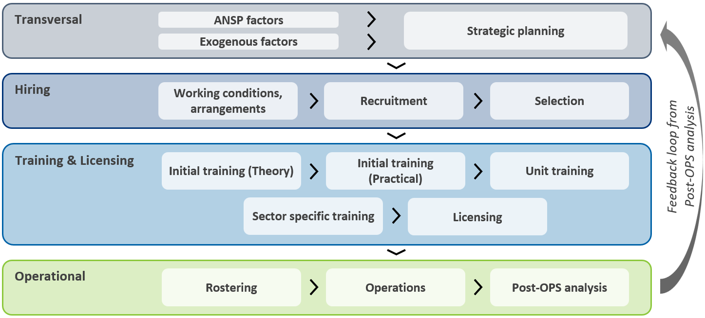

The system and its context
The pipeline connects the decisions that determine how people become, and remain, operational controllers. Each stage affects the capacity available later in the cycle.
The management cycle
The ATCO pipeline describes the steps and decisions through which ANSPs plan, develop and manage controller resources.
The pipeline focuses on management processes, linking workforce planning to recruitment, training, qualification, operational deployment and feedback.
The pipeline provides a common framework for comparing ANSP practices, considering regulatory constraints and identifying where decisions at one stage affect later outcomes.

The supply–demand model builds on a simplified representation of these processes to explore future workforce scenarios.
The model differentiates between factors that are exogenous, that is, outside the control of the ANSPs, and factors that can be influenced or controlled by the management. Exogenous factors are the parameters that describe the operational environment: traffic conditions and their evolution over time, weather phenomena, climate change impacts, changes in ATM technology and new operational concepts, demographics, and the regulatory environment. While ANSPs cannot control these factors, they must consider them when planning future capacity and the required ATCO resources.
ANSP factors, on the other hand, are results of previous management decisions of the ANSP, or at least, outcomes of processes which the ANSP had a chance to influence in the past. Some of these factors, such as performance, ATCO situation, and sector capacities, may be subject to feedback loops from post-operational analysis. Other factors in this category can be characterised as locked-in: decisions regarding ATM technology and some organisational aspects (e.g., the ANSP's position within the state). These factors cannot change over a year; however, on a strategic horizon, even these decisions may be revisited.
Pillars and key areas
The analytical framework applied throughout this study is based on the ATCO management cycle developed during previous phases of the project. The lifecycle provides a structured representation of the main stages, activities and influencing factors affecting the availability of ATCOs across the European ATM system, from workforce planning and recruitment through training, licensing and operational deployment.
To support a systematic assessment of the evidence collected during the study, the elements of the lifecycle have been defined as the key areas of the analysis. These constitute the basic unit of analysis used throughout the modelling and provide a common structure for classifying the challenges, solutions and practices identified through the survey, interviews and literature review.
For analytical purposes, the key areas have been grouped into four high-level pillars, representing the main dimensions through which ATCO availability is influenced:
- Transversal, covering the strategic, institutional and external factors affecting the ATCO management cycle as a whole;
- Hiring, covering the attraction, recruitment and selection of future controllers;
- Training & Licensing, covering the activities required to qualify and endorse controllers for operational duties; and
- Operational, covering the deployment, utilisation and continuous development of ATCOs.
The following figure presents the ATCO management cycle defined in the first part of the project, forming as mentioned the key areas of the assessment of this second part, classified into the four defined pillars.

This structure provides a consistent framework for organising the assessment and ensures that findings from different sources can be compared and consolidated on a common basis. It is used throughout the study to identify challenges, assess solutions and link qualitative findings with the quantitative supply-demand model.